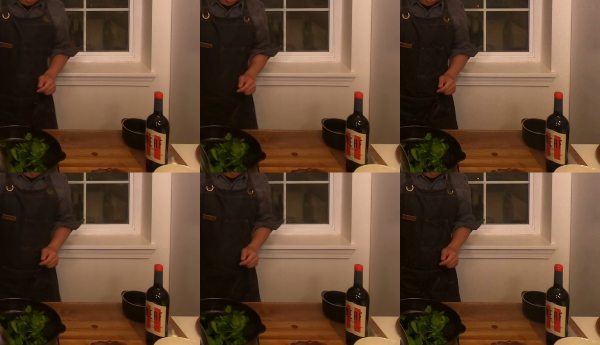

One change to the training of a 120-frame block (frames 180 - 299, half size): the penalty that keeps splats faint and small now acts on a splat only at the moments a camera actually sees it, instead of at every moment. Before, a splat seen in a few of the 120 frames was pushed down at all the others, died, and was placed again elsewhere - 31.5 million such moves in one training, during which the picture stopped improving.
| whole picture | what moves | |
|---|---|---|
| before (Q105b, 120 frames) | 35.50 dB | 33.72 dB |
| this (Q106, 120 frames) | 36.47 dB | 34.41 dB |
| the 2-second block (Q105a, 60 frames) | 36.48 dB | 33.94 dB |
The 4-second block now reaches the 2-second block's quality, and what moves is better than in it. Splats moved during the training: 0.5 million instead of 31.5 million; the training took 4.2 hours instead of 5.0.
Columns: before | this | the photograph. Rows: two moments. The hand by the apron has its fingers and its edge back; the spinach leaves are sharper.

| iteration | before | this | before, what moves | this, what moves |
|---|---|---|---|---|
| 10,000 | 31.68 | 32.99 | 27.08 | 28.13 |
| 20,000 | 33.46 | 35.13 | 27.54 | 30.11 |
| 30,000 | 34.40 | 36.01 | 29.41 | 32.21 |
| 50,000 | 34.65 | 36.38 | 30.32 | 33.61 |
| 70,000 | 34.35 | 36.40 | 29.95 | 33.85 |
| 90,000 | 34.58 | 36.36 | 31.08 | 34.25 |
| 100,000 | 34.90 | 36.37 | 32.03 | 34.15 |
| 110,000 | 35.09 | 36.31 | 32.45 | 33.99 |
| 120,000 | 35.26 | 36.41 | 32.88 | 34.41 |
Before, the picture stood still from iteration 22,000 to 98,000 and only rose once the moves stopped at 100,000. With the change it is ahead from the start and level from 50,000.
Read on one held-out camera, one training each: the gain is several times the usual spread, but it is one comparison. 85 % of the splats end nearly invisible (below 2 % opacity): capacity that does not draw anything. That is the next thing to fix, then the same at 300 frames. No stream yet: this page shows the training's own renders; the playable stream follows.